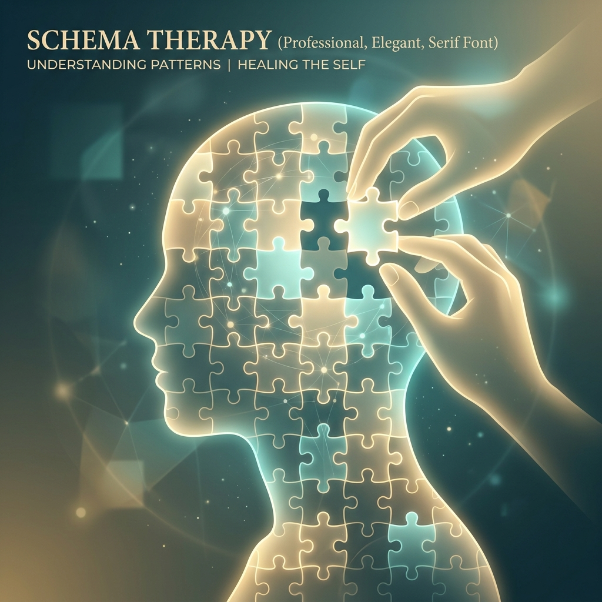
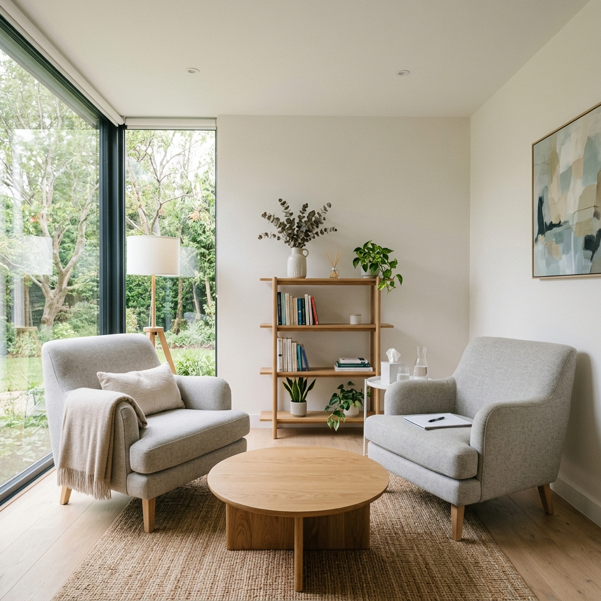

Kadıköy Klinik Psikolog
Asiye Usluca
Ruhsal yolculuğunuzda güvenli bir alan
Yaşamın getirdiği zorluklarla başa çıkarken yalnız değilsiniz. İçsel potansiyelinizi keşfetmek, daha dengeli ve anlamlı bir yaşam sürmek için bilimsel ve empatik yaklaşımlarla yanınızdayım.

YouTube & TV Söyleşileri
Modern Dünyada Ruh Sağlığı ve Danışmanlık Süreçleri
Asiye Usluca'nın konuk olduğu TV programında, günümüzün en yaygın psikolojik zorlukları ve iyileşme yolculuğu üzerine kapsamlı bir söyleşi gerçekleştirdik.

Psikoloji Üzerine Kısa Notlar
Ruh sağlığı, ilişkiler ve kişisel gelişim üzerine hazırladığım kısa ve bilgilendirici içeriklere göz atın.
Güncel Yazılar
Psikoloji dünyasından derinlemesine makaleler ve pratik öneriler.

Şema DanışmanlığıŞema Danışmanlığı ile Kısır Döngüleri Kırmak
Sürekli tekrar eden olumsuz ilişki döngülerinizin sebebi çocukluk şemalarınız olabilir mi? Şema danışmanlığının iyileştirici gücünü öğrenin.
Devamını OkuYoğun Kaygı ile Baş Etme Stratejileri
Günlük hayatta kontrol edemediğimiz kaygıların kökenini anlamak ve bedensel regülasyon yöntemleriyle sakinleşmek üzerine klinik bir bakış.
Devamını Oku
Danışmanlık SüreciDanışmanlıkta İlk Seans: Neler Beklemelisiniz?
Danışmanlığa başlamak cesurca bir adımdır. İlk görüşmede sizi neler beklediğini, tanışma sürecini ve hedeflerin belirlenmesini keşfedin.
Devamını OkuÇalışma Alanları
Farklı yaş grupları ve spesifik ihtiyaçlara yönelik, bilimsel temelli psikolojik danışmanlık hizmetleri sunuyorum.
Bireysel Danışmanlık
Kişinin kendini tanıması, içsel çatışmalarını çözmesi ve yaşam kalitesini artırması için birebir yürütülen danışmanlık süreci.
Detaylı İnceleÇift Danışmanlığı
İlişkilerde yaşanan iletişim sorunlarını aşmak, bağı güçlendirmek ve daha sağlıklı bir etkileşim kurmak.
Detaylı İnceleTravma & EMDR
Geçmişin travmatik anılarını bugünle entegre ederek ruhsal iyileşmeyi hızlandıran güçlü bir yaklaşım.
Detaylı İnceleAnksiyete
Yoğun kaygı ve endişe durumlarında, regülasyon becerilerini geliştirerek yaşam dengesini yeniden kurmak.
Detaylı İnceleDepresyon
Duygusal çöküntü ve isteksizlik hallerinde, yeniden yaşam enerjisi ve anlam kazanmak için destek.
Detaylı İnceleŞema Danışmanlığı
Kökleri çocukluğa dayanan kemikleşmiş inanç sistemlerini (şemalar) değiştirmeye odaklanan bir yaklaşım.
Detaylı İncele